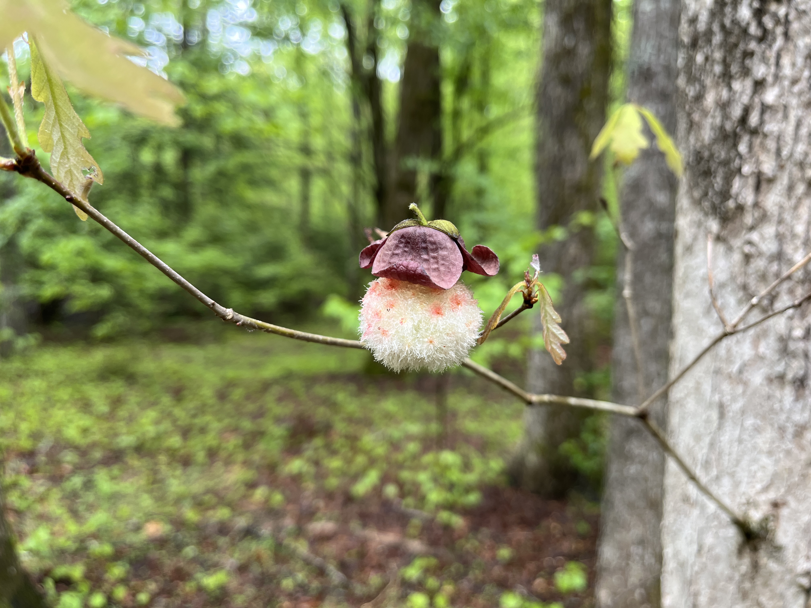
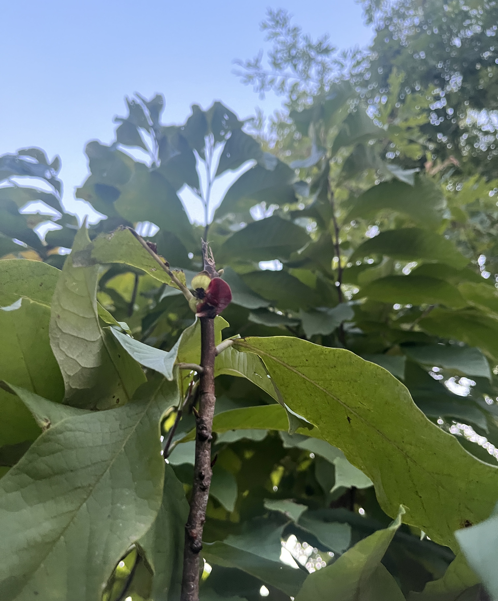
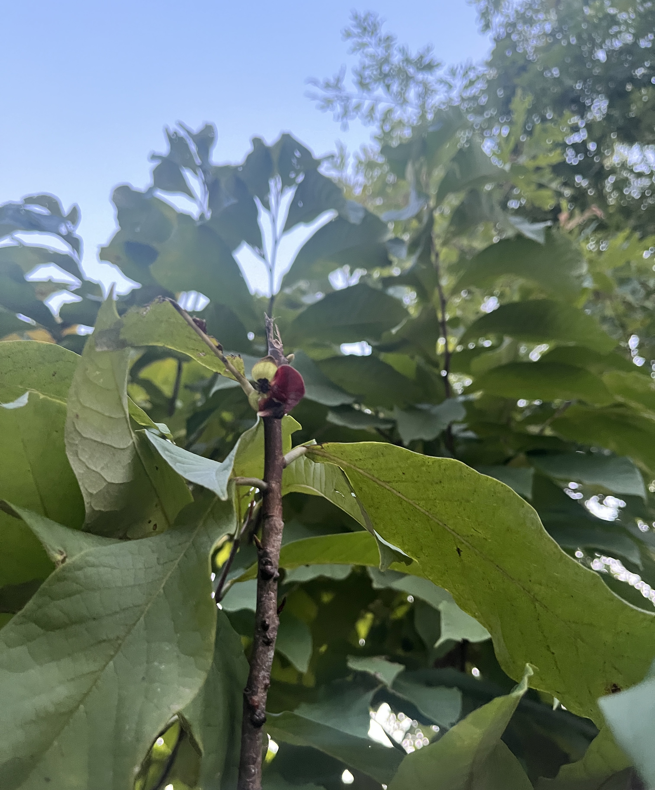
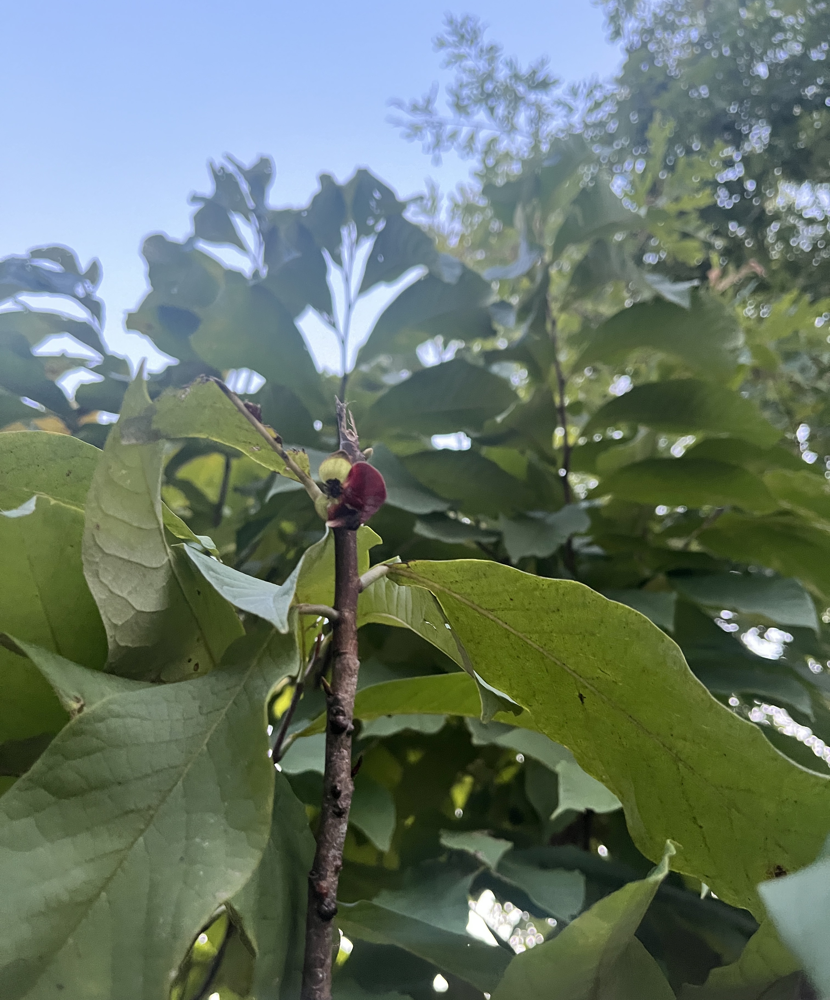
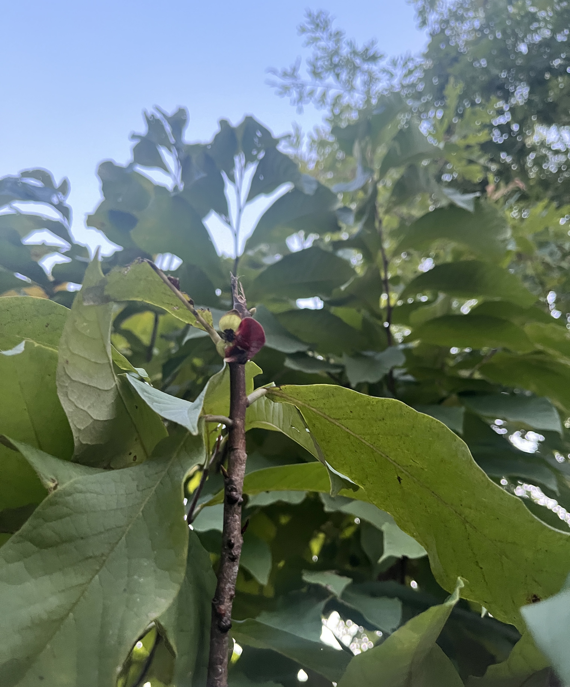

Resources
Photos:

 



Look for deep maroon flowers coming off of second year wood and Zebra Swallowtail butterflies. The flowers smell of freshly baked bread.
The flowers have now dropped, and if they were lucky enough to get pollinated, have left behind clusters of oblong, green fruit.
As the weather begins to cool, start checking your local honey hole for ripe fruit. Ripe pawpaws give to slight pressure from the thumb, not unlike a peach. Be careful, Georgia is in the southern part of the pawpaw's native range, so fruit may ripen by early August some years.
After the trees have dropped their brilliant yellow fall leaves, they can be identified by the bronze buds that appear on second year wood, the precurser to the flowers to come in Spring.

Email: roger.grant.rla@gmail.com